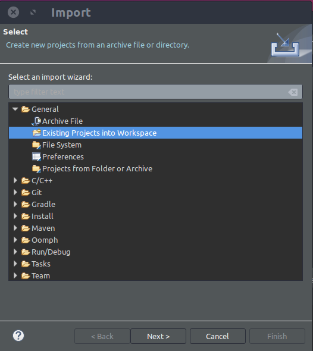
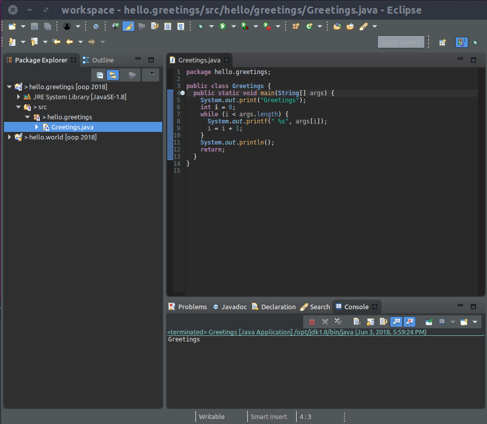

sprint=prog.basics
task=t1
step=t1-s3
Before we go any further, we will start using
the Eclipse tool.
It will simplify your coding experience and
help you learn Java. But like any great tool,
it will require a learning curve.
At first, it will feel a bit complex and a loss of time.
Avant d'aller plus loi, nous allons commencer à utiliser
l'outil Eclipse. Cela va simplifier
votre expérience de programmation et vous aider à apprendre
Java. Mais comme tout outil puissant, cela va demander une
phase d'apprentissage. Au départ, cela vous semblera un peu
complexe et vous donnera la sensation de perdre du temps.
First, this is not a loss of time because,
over the coming years, Eclipse will help you
code faster and save a lot of time.
This is true of any Integrated Development
Environment (IDE), but Eclipse is one of the
best IDE for Java, designed by Java developers,
for Java developers.
Also, the use of Eclipse will also be mandatory in certain
courses during the next three years.
Additionally, it is used by many development teams around
the world.
Premièrement, il n'y a pas de perte de temps, parce
que durant les années à venir, Eclipse vous aidera à programmer
plus rapidement et à gagner beaucoup de temps.
Ceci est vrai de tout Environnement de Développement Intégré (IDE),
et Eclipse est certainement l'un des meilleurs pour Java, conçu
par des développeurs Java pour des développeurs Java.
De plus, l'usage d'Eclipse est obligatoire dans certains cours
pendant les 3 prochaines années. Enfin, c'est un outil
utilisé dans beaucoup d'équipe de développement à travers
le monde.
Unfortunately, every year, some students resist the learning
of Eclipse. They try to avoid it entirely
or they try to minimize the learning, but in the end, they are
just loosing time and preventing themselves from learning a
great tool for the job. Some students do learn as they read these
web pages, but they do not write down
what they learn about Eclipse... Well, guess what? They forgot
within a few days most of what they learned. So make sure you
create your own Eclipse cheat sheet.
Malheureusement, chaque année, certains étudiants résiste
l'apprentissage d'Eclipse. Le résultat est une perte de temps
au final. D'autres étudiants apprennent en lisant ces pages,
mais ils ne notent pas ce qu'ils apprennent... Et devinez
ce qui se passe? Ils oublient en quelques jours ce qu'ils ont
appris. Alors assurez vous que vous créez votre propre anti-sèche
sur Eclipse.
Third, Eclipse is not so complex, we will help you
through the learning curve. So enjoy the help
and let's get started on the right foot with Eclipse.
We will all use the same Eclipse:
Troisièmement, Eclipse n'est pas si complexe que cela;
de plus, nous allons vous aider
durant la phase d'apprentissage. Alors appréciez cette aide
et commencez du bon pied avec Eclipse. Pour faciliter cela,
nous allons tous utiliser le même Eclipse:
- DO NOT INSTALL ECLIPSE VIA YOUR NORMAL INSTALLER.
- DO NOT DOWNLOAD ECLIPSE FROM THE ECLIPSE WEBSITE.
- SOURCE SETENV.SH IN EVERY TERMINAL WINDOW YOU OPEN.
- LAUNCH ECLIPSE SOLELY FROM THE COMMAND LINE.
Please respect this points, every year some students do not and
we waste a lot of time fixing the problems that ensue.
S'il vous plait, respectez ces points. Chaque année, certains
étudiants ne le font pas et nous gâchons beaucoup de temps
à résoudre les problèmes qui en découlent.
We have provided you with an Eclipse already.
It is important that you use the Eclipse we provided you.
We know, you all want to use the latest and greatest,
but we have to maintain the homogeneity of the environment.
You will all be using Java projects that we started under
the provided Eclipse and we do not want to run into configuration
problems.
Nous vous avons fourni Eclipse déjà. C'ets important que vous
utilisiez cet Eclipse. Nous savons, vous voulez tous utiliser
le dernier et le meilleur, mais nous devons maintenir l'homogénéité
de l'environnement. Vous allez tous utiliser des projets Java
que nous avons démarré avec l'ECclipse fourni et nous voulons
éviter les problèmes de configuration.
Take it as your first step in the professional world. When you
will start in a new job, you will not choose your tools, your boss will.
When working
in a team, you have to adopt the same tools as the rest
of the team. Otherwise, you will undermine the team work,
and we do not want that, do we? So you may keep using the tools
you like for your personal projects, but you must agree with the
team decisions when working on a project within a team.
Considérez que c'est votre premier pas dans le monde professionnel.
Quand vous allez démarrer votre métier, vous n'allez pas choisir vos
outils, votre manager décidera pour vous.
Quand vous allez travailler dans une équipe, vous allez devoir tous utiliser
le même outil. Dans le cas contraire, vous allez pénaliser le travail
de l'équipe et nous ne voulons pas cela, n'est ce pas? Donc vous pouvez
continuer à utiliser les outils que vous voulez pour vos projets
personnels, mais vous devez accepter les décisions d'équipe
lorsque vous travaillez dans une équipe.
Eclipse Help
We remind you that we provided you with a summary of what you must know
about Eclipse in these
pages. Warning, these pages are not meant
to be browsed now. They are meant to be a reference
documentation that you will come back to when in doubt, throughout the year.
Nous vous rappelons que nous vous avonz fournit un résumé de ce qu'il
faut savoir pour utiliser Eclipse
dans ces pages. Attention, ces pages
ne sont pas là pour être parcouru maintenant, elles sont là comme
une référence vers laquelle vous reviendrez régulièrement au cours de
l'année.
Launching Eclipse
We will launch Eclipse manually, from a terminal.
This is really important, do follow exactly the instructions below.
DO NOT LAUNCH ECLIPSE BY CLICKING ON A DESKTOP ICON OR ANY OTHER MEANS.
REALLY, WE MEAN IT.
Always launch it like this:
Nous allons démarrer Eclipse manuellement, depuis un terminal.
Ceci est vraiment important, suivez exactement les instructions ci-après.
Ne lancez pas l'exécution d'eclipse en cliquant sur une icône sur votre bureau.
Lancez Eclipse toujours de cette façon:
oop$ source setenv.sh
oop$ eclipse -data workspace/
ALWAYS START ECLIPSE THIS WAY FOR THIS WORKSHOP.
Eclipse will start a new window, with a welcome screen that you can close
right away. As soon as you close it, you will
find yourself in the Java perspective, that is, the Eclipse
graphical interface for Java developers. You should see something like this:
Eclipse va démarrer dans une nouvelle fenêtre, avec un écran d'accueil que vous
pouvez fermer immédiatement. Dès que vous le fermez, vous allez vous trouver
dans la perspective Java, c'est à dire, l'interface graphique pour les
développeurs Java. Vous devez voir quelquechose comme cela:
Your Eclipse can be configured using a dark or light theme. In this
case, you see a dark theme above. You may use any theme you like, but
configure your Eclipse on your own time, not right now. Let's get going
with this task.
Votre Eclipse peut être configuré avec un theme sombre ou clair.
Dans le cas présent, vous voyez un thème sombre. Vous pouvez utiliser
n'importe quel thème, mais nous vous demandons de configurer cela
plus tard, sur votre temps personnel. Maintenant commençons avec
cette tâche.
When you launched Eclipse, you gave two arguments: "-data workspace".
The "-data" option tells Eclipse where is your workspace.
Eclipse uses the concept of a workspace, a directory where it manages
all your projects. We will use our workspace directory
for this, where we provided you with existing projects. We will import
them into Eclipse later, when it will make sense to do so.
L'option "-data" dit à Eclipse où se trouve votre workspace.
Eclipse utiliser le concept de workspace, répertoire où se trouvent
un ensemble de projets. Nous allons utiliser notre répertoire
workspace pour cela, que nous avons pré-rempli avec des projets
existants. Vous allez les importer dans Eclipse plus tard, quand cela
sera le moment.
Installed JREs
Let's make sure that your Eclipse knows where to find your installed
Java Development Kit (JDK), the version of the Java Runtime Environment (JRE)
for developers. We gave you also a version of the JDK, along with Eclipse.
Look where you cloned this workshop, under ~/AgileLearning, you have
a directory share/jdk there. The complete path should
therefore be /home/john/AgileLearning/share/jdk,
assuming that the directory /home/john is your home directory.
You can verify what is your home directory as follows:
Vérifions qu'Eclipse sait où trouver votre Java Development Kit (JDK),
la version du Java Runtime Environment (JRE) pour les développeurs.
Nous vous avons donné une version du JDK avec Eclipse.
Regardons où vous avez cloné ce workshop, sous ~/AgileLearning,
vous avez un répertoire share/jdk. Le chemin complet doit
être quelque chose comme /home/john/AgileLearning/share/jdk,
supposant que le répertoire /home/john est votre home directory.
Vous pouvez vérifier quel est votre home directory comme suit:
oop$ cd
$ pwd
/home/john
So in Eclipse, you need to open the preference dialog, through the Eclipse menus:
Windows - Preferences. Go to the Java section and more specifically
the section called "Installed JREs".
You should see something like this:
Donc dans Eclipse, vous devez ouvrir le dialogue preference, via le menu:
Windows - Preferences. Allez dans la section Java et plus
spécifiquement la section appelée "Installed JREs".
Vous devez voir quelquechose comme suit:
Make sure that the only JRE is for the following location in your
file system: "/home/john/AgileLearning/share/jdk",
still assuming your login is "john" and your home directory
"/home/john". This is a Java-11 Development Kit,
do not use a more recent one.
Vous devez voir une JRE, à la place suivante dans votre système de fichier:
"/home/john/AgileLearning/share/jdk",
en supposant que votre login est "john" et que votre home directory
est "/home/john".
If you see a different JRE, just remove it. Then add the correct one,
clicking on the "Add" button, then selecting a "Standard VM"
and finally browsing to the directory
"~/AgileLearning/share/jdk" as the JRE home.
Si vous ne voyez pas de JRE valide, ajoutez le, en cliquant sur
le bouton "Add", puis en sélectionnant "Standard VM"
et finalement en sélectionnant le répertoire
"~/AgileLearning/share/jdk" comme JRE home.
Importing a project
Normally, you would create a new Java project, but in this case,
the hello.world directory is already configured as an
Eclipse project. So you can import it.
Normalement, vous devez creer un nouveau projet Java, mais dans le cas présent,
le répertoire hello.world est déjà configuré comme un projet
Eclipse. Donc vous pouvez simplement l'importer.
Right-click on the Package Explorer view and select import.
Follow the popup dialog,
selecting General and then Existing Projects in the workspace.
Click on "Next".
Après un clic-droit sur la vue Package Explorer, sélectionner import.
Suivez le popup, sélectionnez General puis
Existing Projects in the workspace.
Enfin cliquez sur "Next".

Keep following
and then choosing the location of the root directory that contains
the project to import
(here, it is workshop/workspace/hello.world). For now, only import
the hello.world project into your Eclipse workspace,
so deselect all projects (Deselect All) and only
select the hello.world project.
Choisissez l'emplacement du répertoire racine du projet à importer
(dans notre cas, workshop/workspace/hello.world).
Importez simplement le projet hello.world dans votre
workspace Eclipse, donc dé-sélectionnez tous les projets
(Deselect All) et sélectionnez hello.world.
Click "Finish".
Note that the project: hello.world appears as a directory
in the Package Explorer view, on the left-hand side of
the Eclipse workbench. Notice that you can see the src
directory and you can see the Java packages we talked about earlier:
the default and
edu.polytech.oop.
The package default contains
classes that are not within a specific package.
Notice how Eclipse nicely hides the directory tree (src/edu/polytech/oop)
into a flat representation showing the individual packages (edu.polytech.oop).
Notez que le projet hello.world apparait comme un répertoire
dans la vue Package Explorer, sur le coté gauche du workbench Eclipse.
Notez également que vous pouvez voir le répertoire src avec les
packages dont nous avons parlé précédemment:
default et
edu.polytech.oop.
Notez comment Eclipse cache judicieusement l'arborescence de fichiers
(src/edu/polytech/oop) derrière une représentation plate montrant les packages
(edu.polytech.oop).
Note: Just ignore the tests.jar for now.
Notice on the upper right corner that you
are indeed in the Java perspective, with the
icon selected in the perspective switcher:
Vérifiez sur le coin haut droit que vous êtes bien dans la perspective
Java, avec l'icone
sélectionnée dans le sélectionneur de perspective.

Notice that you see the Debug perspective in this switcher,
something you may not see on your screen. You can open the Debug
perspective by clicking on the
icon. But we will come back to debugging under Eclipse later.
Vérifiez que vous voyez la perspective Debug dans le sélectionneur
de perspective. Vous pouvez ouvrir la perspective Debug
en cliquant sur l'icone
.
Nous reviendrons plus tard sur l'aspect debug.
Automated Compilation
Another great thing about Eclipse is that it takes care of the
compilation of your sources, automatically, when you save
your changes and only if you save them. When there are
unsaved changes in a source file, there is a "*"
in front of the tab name; try it. If you save
your changes, using the "Ctrl-S" shortcut, or the menu
File -> Save, the "*" disappears and
Eclipse will automatically recompile your modified source.
No more terminals, no more executing the Java compiler manually,
how great is that? Fantastic, right?
Un autre aspect majeur d'Eclipse est qu'il gère la compilation de
vos sources automatiquement, dès que vous sauvegardez vos
changements. Vous sauvez vos changements, via
la touche "Ctrl-S", ou via le menu File -> Save,
l' "*" disparait et
Eclipse recompile automatiquement vos sources modifiés.
Eclipse does everything automatically and does it well.
But sometimes, you will see persistent compilation errors,
appearing as red crosses in the Package Explorer and
in your class sources. If you really believe that your code
is correct, you may try to clean your project: Project -> Clean.
This ask Eclipse to recompile everything, from scratch.
But you will seldom use this, so just make a mental note of the
possibility and trust Eclipse to do the right thing.
Eclipse fait presque tout automatiquement, comme il faut.
Cependant, certaines fois, vous verrez des erreurs de compilation,
apparaissant via des croix rouges dans le Package Explorer et
dans vos classes sources.
Si vous pensez vraiment que votre code est correct, vous pouvez
re-essayer de nettoyer votre projet: Project -> Clean.
Cela va demander à Eclipse de tout recompiler, depuis le debut.
Mais vous allez utiliser cela rarement, donc retenez simplement
cette possibilité et faites confiance à Eclipse pour faire ce qu'il
faut.
Notice there is also a tab called "Problems" that lists
all the compilation problems in all the projects. This is a good
place to check more details about warning or errors when you see
red crosses (errors) or yellow triangles (warning). If you see
a red exclamation mark ('!') on your project in the "PackageExplorer",
this means you project is not compiling, more on that when we will discuss
the build path for a project.
Notez qu'il y a aussi un panneau appelé "Problems" qui liste
tous les problèmes de compilation dans tous les projets. C'est un endroit
où avoir les détails des erreurs (croix rouges) et des warnings (triangles
jaunes). Si vous voyez un point d'exclamation ('!') au niveau du nom de
votre projet dans le panneau "PackageExplorer", cela veut dire que votre
projet ne compile pas du tout, nous y reviendrons lorsque nous parlerons
du "build path" un peu plus tard.
Launching an execution
From Eclipse, you can launch the execution of any class that has
a main method.
Since all our classes
HelloWorld
do have a method main,
you can select any of our class in the Package Explorer view
and right-click on it. Just follow the popup menu,
selecting "Run As" and then "Java Application".
Let's select and launched the
HelloWorld class
in the package
edu.polytech.oop.
Depuis Eclipse, vous pouvez lancer l'exécution de toute classe
qui a une méthode main.
Puisque toutes nos classes ont une méthode
main,
vous pouvez sélectionner n'importe quelle classe via un clic-droit
sur la classe dans la vue Package Explorer.
Suivez simplement le menu popup, sélectionnez
"Run As"
puis "Java Application".
Essayons avec la classe
HelloWorld du package
edu.polytech.oop.
Notice at the bottom, the output of the execution, in
the Console view. If you do not see a Console,
you can open it through the Eclipse menus:
Windows then Show View and then
Console. Remember this, you can open any view in
any perspective this way.
Remarquez en bas du workbench le résultat de l'exécution, dans
la vue Console. Si vous ne voyez pas cette vue, vous
pouvez l'ouvrir via les menus Eclipse:
Windows puis Show View puis
Console. Rappelez vous de cela, vous pouvez ouvrir
n'importe quelle vue par ce biais.
Create a Java Project
You learned to import a project, it is also important
to learn to create a new Java project from scratch.
This is what we will do now: create a project called
hello.greetings.
To create a Java project, you can use the Eclipse menus:
Vous avez appris à importer un projet existant, c'est également important
d'apprendre à créer un nouveau projet depuis zéro.
Nous allons le faire maintenant: créer un projet appelé
hello.greetings.
Pour créer un projet, vous pouvez utiliser les menus Eclipse:
File → New → Java Project.
A dialog appears to choose some of the features of your Java project.
First, pick the name hello.greetings and look at the default location,
it is exactly what we want (a subdirectory called hello.greetings
in the workspace directory). So let the box
Use default location
checked. But note that you could choose another location for your project.
Un dialogue apparait pour configurer votre nouveau projet.
Tout d'abord, choisissez le nom hello.greetings et vérifiez
le dossier choisi par défault. C'est un sous dossier du dossier
du workspace, c'est exactement ce que nous voulions. Parfait.
Notez que vous pourriez choisir un autre endroit dans le système
de fichier pour votre projet.
Very important, you must choose an execution environment.
Be sure to choose a level of Java that is compatible with the code you have
or intend to write. Like almost all programming languages, Java has
defined different versions over the years. The version
we will use is Java11 and this is why we gave you a JDK11.
So choosing JavaSE-11 is good.
Très important, vous devez choisir un environnement d'exécution,
c'est à dire une version de la plateforme Java.
Soyez certain de choisir une version qui soit compatible avec
le code que vous avez ou que vous voulez écrire. Le langage
Java a évolué au cours du temps, nous allons utiliser la version 11.
Donc, choisir JavaSE-11 est bien.
Cela correspond d'ailleurs à la version de Java que vous
avez installé.
Note: if you do not see the version of Java you want,
click on the Configure JREs... link.
Make sure that you leave the selected option about the project layout:
create separate folders for sources and class files. Remember, this is
what we did earlier, we created a src and bin directory
in the hello.world project. We want to keep this layout for
this new project and all future projects in the workshop.
Soyez certain de ne pas toucher à l'organisation standard de votre
projet. Rappelez vous, nous avions créer un dossier
src et un dossier bin dans notre projet
hello.world. Nous voulons garder cette structure
pour ce nouveau projet et pour tous les projets de cet atelier.
Create a Java Package
Let's create a Java package called
hello.greetings.
Right-click on the src and select New
and then select Package. You can see that Eclipse
has prefilled the package name, with project name.
So just click Finish.
You should have something like the screen capture below.
Créons un package appelé hello.greetings.
Avec un clic droit sur src, sélectionnez New
puis Package. Vous devez voir qu'Eclipse a pré-rempli
le nom du package avec le nom du projet.
Cliquez simplement Finish.
Vous devez avoir quelque chose comme l'écran ci-après.
Create a Java Class
Now, we can create a new class in the package
hello.greetings.
Just right-click the package in the Package Explorer
and select New class. Name the new class
Greetings.
Then add the following method:
Maintenant, vous pouvez créer une classe dans le package
hello.greetings.
Faites simplement un clic droit sur le package dans le
Package Explorer
et selectionnez New class. Nommez la nouvelle classe
Greetings.
Puis ajoutez la méthode suivante:
package hello.greetings;
public class Greetings {
public static void main(String[] args) {
System.out.print("Greetings");
int i=0;
while (i < args.length) {
System.out.printf(" %s", args[i]);
i = i + 1;
}
System.out.println("!");
return;
}
}
You should see something like this:

Notice how Eclipse nicely hides the directory tree (src/hello/greetings)
into a flat representation showing the individual packages (hello.greetings).
If it is not the case, you can control that via the Package Explorer
toolbar:
Locate the little triangle icon on the right-hand side and
click on it, select from the drop-down menu the
Package Representation, as flat or hierarchical.
What is this new class doing?
Try it yourself from
the command line. You know Eclipse has compiled the source
from the "src" directory to a class file in "bin" directory.
So you can launch the class
Greetings like this:
Que fait cette nouvelle classe? essayez depuis la ligne de
commande.. Vous savez qu'Eclipse a compilé le source depuis
le répertoire "src" vers une classe dans le répertoire "bin".
Donc vous pouvez lancer la classe
Greetings comem suit:
Nothing seems to have changed, right? Well, now try to add arguments
to the execution, like this:
Feel free to try other arguments, like your own name for instance.
The following check will just try to execute your
class hello.greetings.Greetings,
as illustrated above.
Something is not quite right, check your hello.greetings project
in the workspace directory:
-
Make sure that you have a file called Greetings.java under
the "src/hello/greetings" directory.
-
Make sure that you also have a file called "Greetings.class"
under the "bin/hello/greetings" directory.
-
Make sure that you can load and execute your class Greetings
like this:
Ask for help if you need to.
Everything looks fine.
Congratulations!
But how could we launch the execution from Eclipse, with arguments?
You can launch the class Greetings
as before, with a right-click on the class. Of course,
Eclipse will create a corresponding Launch Configurations.
Remember, you access launch configurations via the debugger
icon
 ,
selecting the drop-down menu with the little black triangle
and then selecting "Debug Configurations".
You should see something like this:
Mais comment faire pour lancer une exécution depuis Eclipse
avec des arguments?
,
selecting the drop-down menu with the little black triangle
and then selecting "Debug Configurations".
You should see something like this:
Mais comment faire pour lancer une exécution depuis Eclipse
avec des arguments?
Nous devons introduire le concept de Configuration de Lancement.
A chaque fois que vous lancez une exécution, Eclipse crée
automatiquement une configuration correspondante. Vous pouvez
les accéder par l'icon du debugger:
See the tab called Arguments, in order to switch to it.
You can see you have two areas, one for the program arguments and
the other for the VM arguments. Here, the VM
means the Java Platform. Let's just ignore this for now since
we do not have special arguments to pass to the Java Platform.
Add the program arguments: Albert Einstein. You should have this:
Voyez vous l'onglet Arguments? Selectionnez le.
Vous voyez deux zones de saisie, une pour les arguments qui
seront passé au programme lancé et l'autre pour les arguments
qui seront passé à la plateforme Java. Nous n'avons pas d'arguments
à passer à la plateforme, mais nous voulons passer des arguments
à notre programme. Saisissez les arguments: Albert Einstein.
Vous devriez avoir cela:
Now look at the Debug button, down on the right-hand
side corner. Debugging is another way to launch an execution,
just click on the Debug button. The class should
execute and you should see this:
Maintenant regardez le bouton Debug, sur le coin droit.
Debugger est un autre moyen de lancer une exécution.
Cliquez sur le bouton Debug. Vous devriez voir cela:

Congrats and Quizz
First, congrats! You have made you first steps using Eclipse.
Next step will be about debugging to learn more about Java programming.
Stay tuned!
En premier, félicitations, vous avez fait vos premiers pas avec Eclipse.
Les étapes suivantes concerneront les aspects debug.
Restez à l'écoute!
Second, how much do you think you will
remember about all this in 3 weeks or 6 months? Probably not much,
right? So then, how
will you go about finding that information again?
Did you take any notes? Did you organize what you have learned?
If you did, great! If you didn't, oh well... it means that you will
loose time on the Web to find it again... As we discussed earlier,
every year,
some students understand that they have to learn Eclipse and some
others try to escape it. Now, guess who will learn better and faster
during this year?
En second, est-ce que vous pensez que vous vous rappelerez
de tout ces points dans 6 mois? Probablement pas beaucoup, n'est-ce pas?
Et donc, comment ferez-vous pour retrouver l'information?
Avez-vous pris des notes? Si oui, c'est super. Si ce n'est pas le
cas... et bien c'est vous qui perdrez votre temps sur le Web.
Comme nous avons discuté déjà, certains étudiants comprennent
qu'il faut apprendre et maîtriser Eclipse, d'autres pensent
gagner du temps en l'évitant... lesquels d'après vous seront
en avance dans quelques semaines?